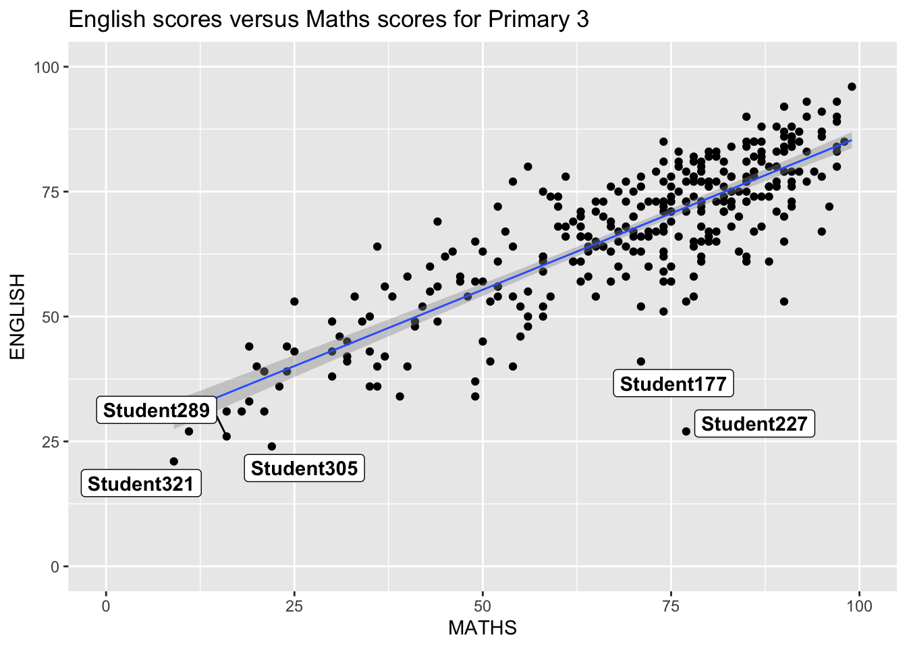
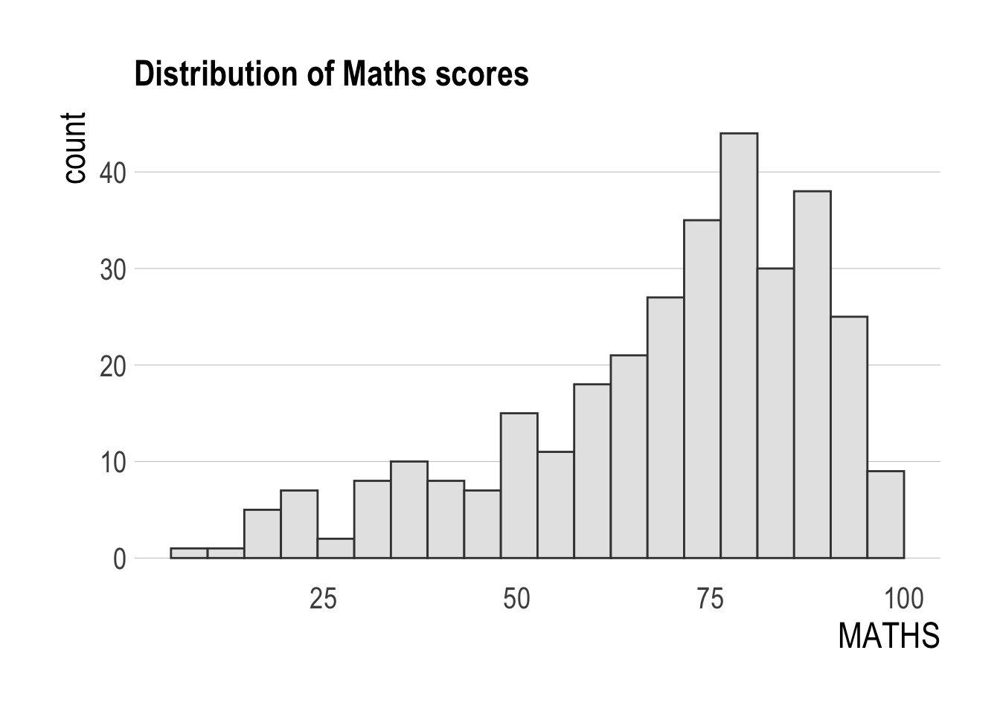
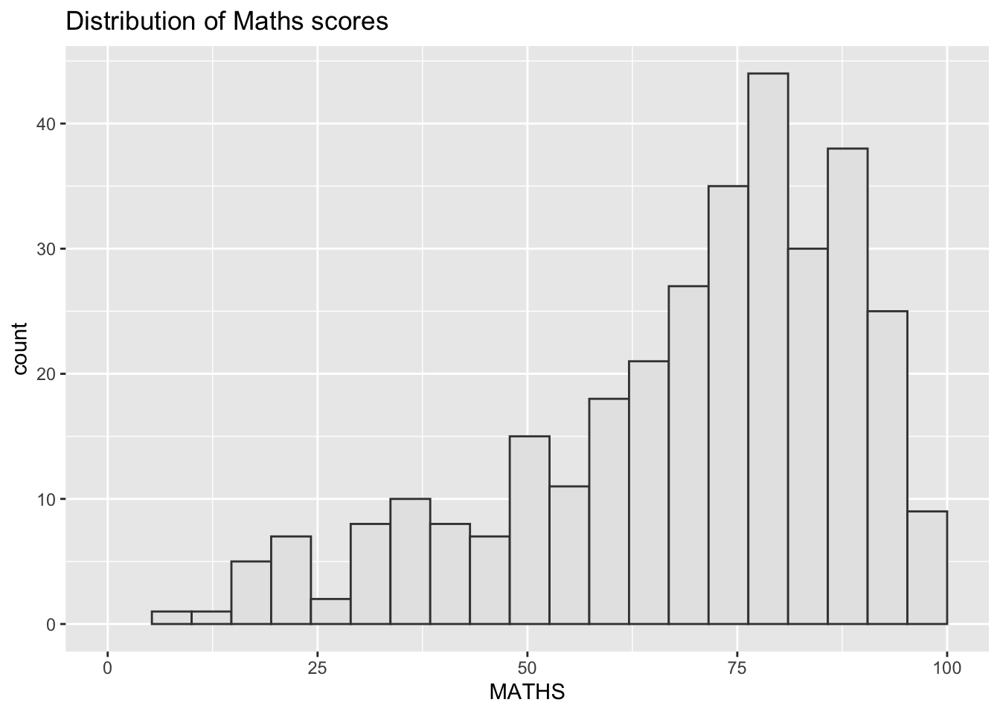
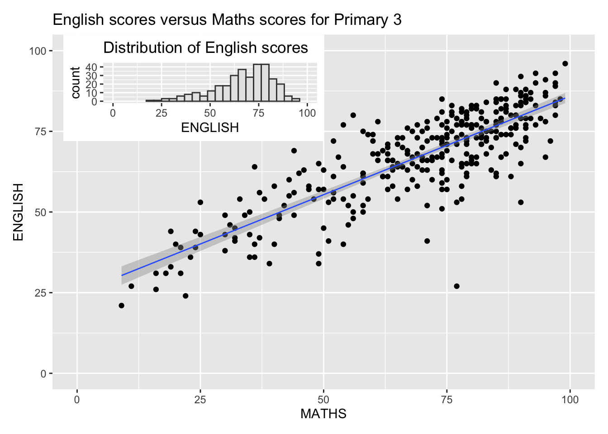

pacman::p_load(
ggrepel,
patchwork,
ggthemes,
hrbrthemes,
tidyverse
)Hands-on_Exercise 2 - Beyond ggplot2 Fundamentals
2.1. Overview
Welcome to this chapter! Here, you’ll explore a set of powerful ggplot2 extensions that help you craft stunning, publication-ready visualizations with precision and polish.
By the end of this session, you’ll be able to confidently:
- Control annotation placement using the
{ggrepel}package — no more overlapping labels! - Design publication-quality visuals with aesthetic finesse using
{ggthemes}and{hrbrthemes}. - Build composite figures by smartly combining multiple plots using the
{patchwork}package.
Let’s level up your data storytelling game — one plot at a time!
2.2. Getting started
2.2.1. Installing and loading the required libraries
In this exercise, alongside tidyverse, we’ll use four essential R packages to boost your plotting game with ggplot2. Here’s a quick rundown:
- {ggrepel}: Avoid overlapping text labels by using repelling geoms.
- {ggthemes}: Access a library of extra themes, geoms, and scales for your plots.
- {hrbrthemes}: Add typography-focused themes for better readability and polish.
- {patchwork}: Seamlessly stitch multiple
ggplot2graphs into a single composite figure.
To ensure all packages are installed and loaded, use the following code chunk:
Smart Loading Trick!
This command checks if the packages are already installed.
If not, it installs them — saving you time and hassle!
2.2.2. Importing data
A dataset named Exam_data is used in this section. It contains year-end examination scores for a cohort of Primary 3 students from a local school and is stored in CSV format.
The read_csv() function from the readr package, part of the tidyverse, is applied to import the file:
exam_data <- read_csv("data/Exam_data.csv", show_col_types = FALSE)üìã Preview of the data:
| ID | CLASS | GENDER | RACE | ENGLISH | MATHS | SCIENCE |
|---|---|---|---|---|---|---|
| Student321 | 3I | Male | Malay | 21 | 9 | 15 |
| Student305 | 3I | Female | Malay | 24 | 22 | 16 |
| Student289 | 3H | Male | Chinese | 26 | 16 | 16 |
| Student227 | 3F | Male | Chinese | 27 | 77 | 31 |
| Student318 | 3I | Male | Malay | 27 | 11 | 25 |
| Student306 | 3I | Female | Malay | 31 | 16 | 16 |
2.3. Beyond ggplot2 Annotation: ggrepel
One of the challenge in plotting statistical graph is annotation, especially with large number of data points.
Example: English scores versus Maths scores for Primary 3

ggplot(data=exam_data,
aes(x= MATHS,
y=ENGLISH)) +
geom_point() +
geom_smooth(method=lm,
size=0.5) +
geom_label(aes(label = ID),
hjust = .5,
vjust = -.5) +
coord_cartesian(xlim=c(0,100),
ylim=c(0,100)) +
ggtitle("English scores versus Maths scores for Primary 3")
ggrepelis an extension of the ggplot2 package that introduces specializedgeomsto repel overlapping text labels in crowded plots.
To improve text label clarity:
- Replace
geom_text()withgeom_text_repel() - Replace
geom_label()withgeom_label_repel()
These functions automatically adjust label positions to prevent overlap, resulting in a cleaner and more readable plot.
Tip!
ggrepel enhances label placement in ggplot2. Use geom_text_repel() and geom_label_repel() to prevent overlapping text.
2.3.1. Working with ggrepel
Adding too many labels to a plot can clutter the visualization and reduce clarity. The ggrepel package provides an effective solution by automatically adjusting the position of labels to avoid overlapping.

ggplot(data=exam_data,
aes(x= MATHS,
y=ENGLISH)) +
geom_point() +
geom_smooth(method=lm,
size=0.5) +
geom_label_repel(aes(label = ID),
fontface = "bold") +
coord_cartesian(xlim=c(0,100),
ylim=c(0,100)) +
ggtitle("English scores versus Maths scores for Primary 3")2.4. Beyond ggplot2 Themes
The ggplot2 package includes eight built-in themes that allow for quick customization of plot appearance. These include:
theme_gray()(default)theme_bw()theme_classic()theme_dark()theme_light()theme_linedraw()theme_minimal()theme_void()

ggplot(data=exam_data,
aes(x = MATHS)) +
geom_histogram(bins=20,
boundary = 100,
color="grey25",
fill="grey90") +
theme_gray() +
ggtitle("Distribution of Maths scores") Refer to this link to learn more about ggplot2 Themes
2.4.1. Working with ggtheme package
The ggthemes package offers additional themes for ggplot2 that mimic the visual styles of well-known publications and tools such as:
- Edward Tufte
- Stephen Few
- Fivethirtyeight
- The Economist
- The Wall Street Journal
- Stata
- Excel
In the following example, the Economist theme is applied.

ggplot(data=exam_data,
aes(x = MATHS)) +
geom_histogram(bins=20,
boundary = 100,
color="grey25",
fill="grey90") +
ggtitle("Distribution of Maths scores") +
theme_economist()
More from
ggthemes
Additional geoms and scales are also available via ggthemes.
More information can be found in this vignette.
2.4.2. Working with hrbthems package
hrbrthemes package provides a base theme that focuses on typographic elements, including where various labels are placed as well as the fonts that are used.

ggplot(data=exam_data,
aes(x = MATHS)) +
geom_histogram(bins=20,
boundary = 100,
color="grey25",
fill="grey90") +
ggtitle("Distribution of Maths scores") +
theme_ipsum()The second goal centers around productivity for a production workflow. In fact, this “production workflow” is the context for where the elements of hrbrthemes should be used. Consult this vignette to learn more.

ggplot(data=exam_data,
aes(x = MATHS)) +
geom_histogram(bins=20,
boundary = 100,
color="grey25",
fill="grey90") +
ggtitle("Distribution of Maths scores") +
theme_ipsum(axis_title_size = 18,
base_size = 15,
grid = "Y")
What can we learn from the code chunk above?`
axis_title_sizeargument is used to increase the font size of the axis title to 18,base_sizeargument is used to increase the default axis label to 15, andgridargument is used to remove the x-axis grid lines.
2.5. Beyond Single Graph
It is common for a single chart to fall short in conveying a complete story. To enhance clarity and insight, multiple statistical graphics are often needed to work together. Extensions of ggplot2 offer various tools that make it easy to combine multiple plots into a cohesive visual narrative.
The following section demonstrates how to build composite graphics using the patchwork package.
Begin by generating three individual plots using the code chunk below.

p1 <- ggplot(data=exam_data,
aes(x = MATHS)) +
geom_histogram(bins=20,
boundary = 100,
color="grey25",
fill="grey90") +
coord_cartesian(xlim=c(0,100)) +
ggtitle("Distribution of Maths scores")Next:

p2 <- ggplot(data=exam_data,
aes(x = ENGLISH)) +
geom_histogram(bins=20,
boundary = 100,
color="grey25",
fill="grey90") +
coord_cartesian(xlim=c(0,100)) +
ggtitle("Distribution of English scores")Lastly, we will draw a scatterplot for English score versus Maths score by as shown below:
p3 <- ggplot(data=exam_data,
aes(x= MATHS,
y=ENGLISH)) +
geom_point() +
geom_smooth(method=lm,
size=0.5) +
coord_cartesian(xlim=c(0,100),
ylim=c(0,100)) +
ggtitle("English scores versus Maths scores for Primary 3")2.5.1. Creating Composite Graphics: patchwork methods
Several ggplot2 extensions provide functions to create composite graphics by combining multiple plots into a single figure. Notable examples include:
grid.arrange()from the gridExtra package
plot_grid()from the cowplot package
patchwork, a purpose-built extension for composing multipleggplot2outputs into a unified layout
Among these, the patchwork package offers a particularly simple and intuitive syntax for arranging plots. The basic layout rules include:
- Use the
+operator for two-column layouts
- Wrap plots in parentheses
()to group them
- Use the
/operator to stack plots in rows
2.5.2. Combining two ggplot2 graphs
Figure in the tabset below shows a composite of two histograms created using the patchwork package.
Note
Observe how clean and intuitive the syntax is when building a combined figure layout!

p1 + p22.5.3. Combining three ggplot2 graphs
We can plot more complex composite by using appropriate operators. For example, the composite figure below is plotted by using:
- “/” operator to stack two ggplot2 graphs,
- “|” operator to place the plots beside each other,
- “()” operator the define the sequence of the plotting.

(p1 / p2) | p32.5.4. Creating a composite figure with tag
In order to identify subplots in text, patchwork also provides auto-tagging capabilities as shown in the figure below.

((p1 / p2) | p3) +
plot_annotation(tag_levels = 'I')2.5.5. Creating figure with insert
Besides placing plots side-by-side or in stacked layouts, patchwork also enables flexible placement of plots on top of each other.
Using inset_element(), one or more graphics can be freely overlaid on a base plot — ideal for highlighting insights with mini visual summaries.

p3 + inset_element(p2,
left = 0.02,
bottom = 0.7,
right = 0.5,
top = 1)2.5.6. Creating a composite figure by using patchwork and ggtheme
Figure below is created by combining patchwork and theme_economist() of ggthemes package discussed earlier.
patchwork <- (p1 / p2) | p3
patchwork & theme_economist()